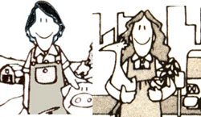
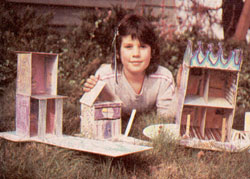
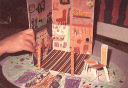

Make Cardboard Houses!
MOTHER feels strongly that youths can be creative "Doers," working toward more ecological and self-reliant lifestyles . . . whether their tasks be raising chickens on a farm or maintaining rooftop container gardens in the city. To support the endeavors of our often overlooked "underage" citizens, we're glad to publish well-written articles from younger children and teenagers concerning projects they've undertaken. However, we recommend that all young authors query (that is, send us a letter telling about the story they'd like to do) before writing a full article. Address inquiries to Mother's Children, THE Mother Earth News, P.O. Box 70, Hendersonville, NC 28793.
My mother is an artist and art teacher. We have two friends who are picture framers. One of them had a bag of leftover mat board. My mother told him she'd like to use it for art projects, so he gave it to her.
I tried making a cardboard house out of the mat board, and it was lots of fun. I had a great time drawing on the walls. This is the only time in my life my mom ever let me draw on walls!
For my first house I drew a big window and door on the front. The window has stained glass and a purple curtain. The door is blue. I put the same address number on my cardboard house that is on my real house-15474. I put rainbows all over the back of the house. And I drew flowers all over one side and a window with a pot of flowers in it on the other. It really looked like my house.
I made an apartment building, too. I decorated it with watercolors, crayons, markers, and wallpaper samples. I cut out magazine pictures of books and a clock and added them. I also used real cloth for part of a curtain. Gee, I think I could use just about anything to decorate a cardboard house!
Making a cardboard house is pretty easy, but you may need a grownup to help you cut the cardboard and to hold the pieces together when you glue them. Ask a framer if he or she will give you some leftover mat board. If there are no framers nearby, you can use regular brown cardboard. You might want to glue white paper on it, though, before you start decorating, so the colors will show up good.
First, get four pieces of cardboard. Cut all four pieces to be the same height. Then cut the front and back so they are the same size as each other. The two sides also need to be the same size.
Next, decorate the walls. I suggest you mark the walls somehow, so you'll know which side is which. (I got a little con fused at times about which were the inside walls and which were the outside ones. So I wrote "LI" for left inside wall, "RI" for right inside wall, and so on. That helped me.)
Now glue together the back and one side, then the back and the other side. If your house has a front, glue the front on. You can use white or wood glue, and put the glue on one edge or both. Both would probably work better.
When you've glued the last piece, you'll have a box-or three sides of a box-without a top or bottom. You can put on a flat roof or one with a peak. To make a peaked roof, first cut and glue a flat top on the box. Then take two more pieces of cardboard and slant them and put glue on their top edges and where the slanted pieces meet the side of the house. Hold the roof together while the glue begins to dry or else it will fall apart.
You can make a floor and glue that on, or you can take a bigger piece of cardboard-however big you want it-and use that to make a yard. Glue your house onto the yard. (You might want to first decorate the spot on the cardboard where the floor will be.)
I decorated the yard of my apartment building by drawing grass and flowers on it. I made a walkway out of real rocks and used BB's for flowers along the walkway and in the yard. I glued some beads on for other flowers. And I made a table and chair for the yard out of thin cardboard.
The apartment building is just like a house except it's higher and has a separation in it to make four rooms. It was pretty easy to make the separation. I cut one piece of cardboard to fit inside as the top story's floor and bottom story's ceiling. Then I made a second piece as tall as the building but not as deep. I cut a slit in the first piece big enough for the other piece of cardboard to fit in. Then I put the two pieces together and glued them in place. There's no front on the apartment building, so you can see in it. You could even make your very own doll house this way if you make the building big enough to put your dolls in.
If you want to make a house that looks like your house, you can make it the shape of your house and decorate it the way your house looks. You can draw pictures of your family inside it or make little paper or cardboard figures of them to put inside. If you have a vegetable garden, you could cut out little cardboard vegetables and color them in. You can glue them flat on the yard or make them stand up by gluing them and holding them until they dry. Also, you can cut out pictures of vegetables, flowers, or trees from seed catalogs or magazines and glue those on. You can make cardboard swings, cars, trees, or a little greenhouse in your yard.
You'll probably invent many other ways to make cardboard houses! Remember that you can decorate them with almost anything: crayons, markers, watercolors, poster paint, magazine pictures, seed catalog pictures, family photos, paper from wallpaper sample books (you can get these free at wallpaper stores), cloth, rocks, little sticks, cotton balls, confetti, colored paper, stickers, yarn, string, aluminum foil, fur, feathers, Styrofoam . . . or whatever you can think of that will work!
I think it's fun to make these houses because you can make them all different ways and decorate them all different ways. They can have one room, two rooms, or lots of rooms. They can be cottages, castles, shacks, or dollhouses. You can see into them or not see into them or see into part of them. You can make them fancy or plain.
I hope you have as much fun as I did making cardboard houses!
|
 |
 |
 |